Фильмы
Жить
Молодой Ахмед
Молчание Лорны
Идеальные дни
Любовь
Прощание с бумагой
Сын
Ариран
Восемь с половиной
Танцующая в темноте
Тори и Локита
Ариэль
Тени в раю
Осенняя соната
Персона
Три цвета: красный
Обещание
Я, Дэниел Блэйк
«Жить» (1952) Акира Куросава
Я не могу себе позволить ненавидеть людей — у меня нет на это времени.
Живите только одним днём — ведь жизнь так коротка!
Об усилии и доброте.
Узнать больше
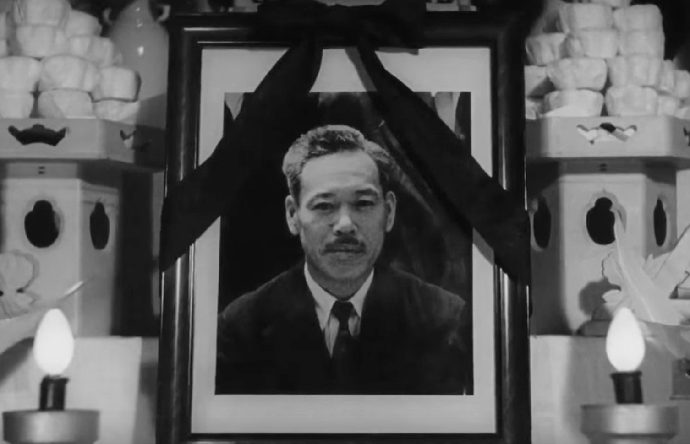
«Молодой Ахмед» (2019) Жан-Пьер и Люк Дарденн
Опасность искажённого вИдения мира.
Красота подростков (и взрослых людей).
В конечном счёте, выручает осознание/покаяние (после падения) и подствленная «вторая щека»/прощение Другим.
Узнать больше
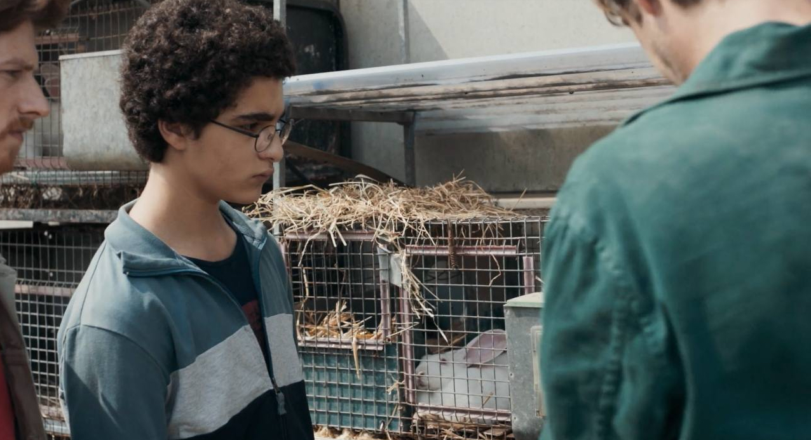
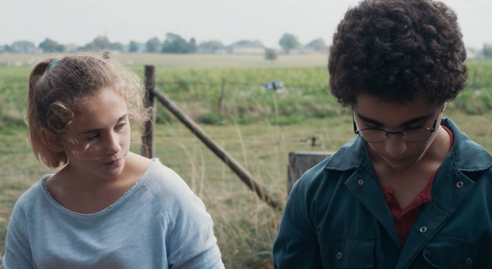
Отличный фильм! Действует, несмотря на изначально кажущуюся неблизость темы.
«Молчание Лорны» (2008) Жан-Пьер и Люк Дарденн
Мне нужно тебя видеть — это мне помогает (цель в середине дня и велосипед).
После таких фильмов не хочется поступать плохо.
Узнать больше
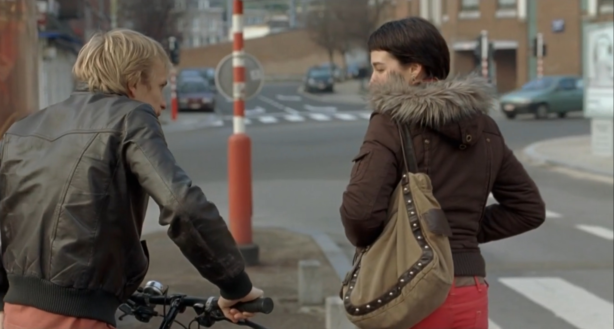
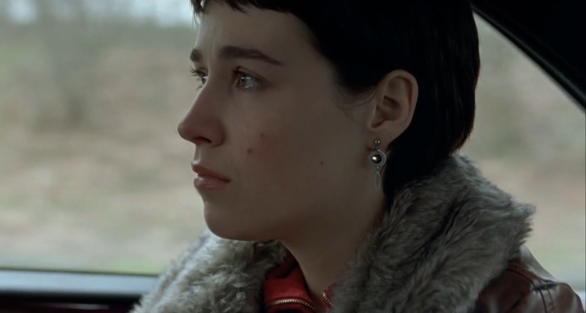
Не волнуйся, кто-нибудь нам да поможет. Спи крепко.
О милосердии и мужестве.
«Идеальные дни» (2023) Вим Вендерс
Мелочные мужчины совсем непривлекательны!
Потом это потом, а сейчас это сейчас.
Узнать больше
Этот мир состоит из множества миров. Они вроде связаны, а на самом деле нет.
И вот мой мир совсем не похож на мир твоей мамы. — А как же я? Я в каком мире живу?
Уильям Фолкнер «Дикие пальмы».
Комореби — слово в японском языке, означающее игру света и теней, создаваемую трепещущими
на ветерке листьями, существующую только здесь и сейчас.


О возможной трагичной оптимистичности человеческого существования.
«Любовь» (2012) Михаэль Ханеке
Я так рад, что ты вернулась.
Ты не наденешь пальто?
Узнать больше
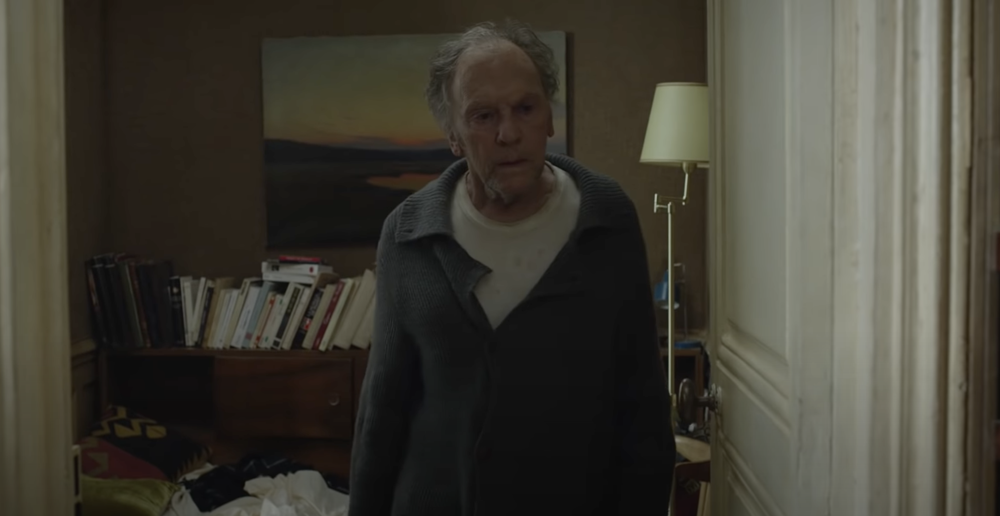
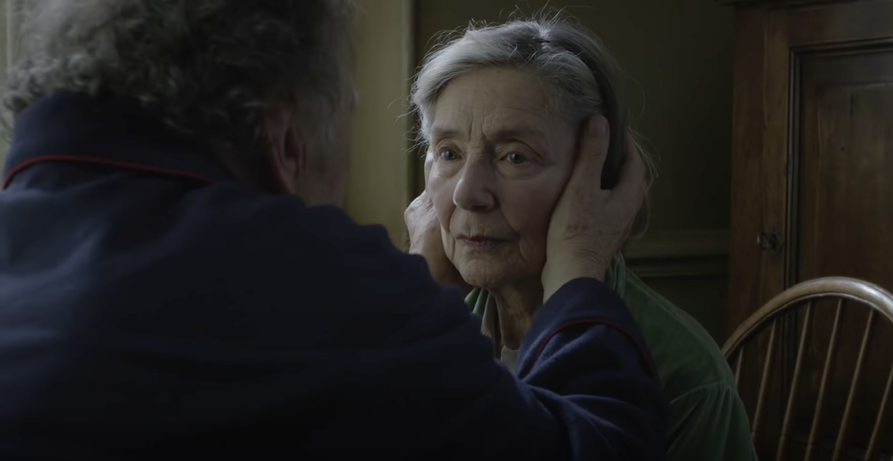
Крайне деликатно сделанный фильм о таких трудных темах, как: любовь, смерть, насилие, выбор, красота.
«Прощание с бумагой» (2014) Евгений Гришковец
Печальна последняя конфета в коробке конфет — намекает (на нашу конечность).
Мы заполняем жизнь содержанием и событиями (стихи, картины, аккорды; телескоп, горы, диссертации), чтобы не так трудно было ждать писем.
Узнать больше
Почерк — наша индивидуальность и неповторимость; мы его теряем, бумага уходит.
С любовью к словам и вещам.
«Сын» (2002) Жан-Пьер и Люк Дарденн
Ты лучший. — Хорошо.
Оливье, ты в порядке? — Да.
О становлении отца.
Узнать больше

Jean-Pierre and Luc Dardenne’s Closet Picks
Наблюдатель. Люк Дарденн
«Ариран» (2011) Ким Ки Дук
Та жизнь, которой я сейчас живу, даёт мне ощущение дома.
Мои счастливейшие моменты жизни — это, когда я снимаю фильмы.
Узнать больше
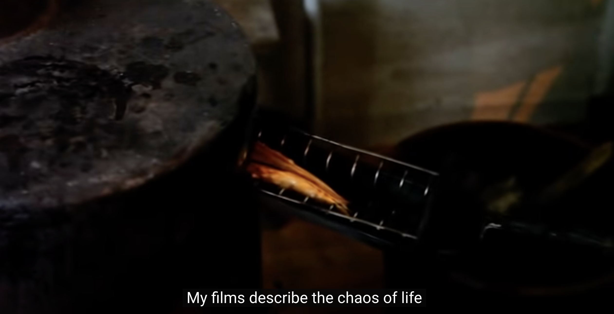
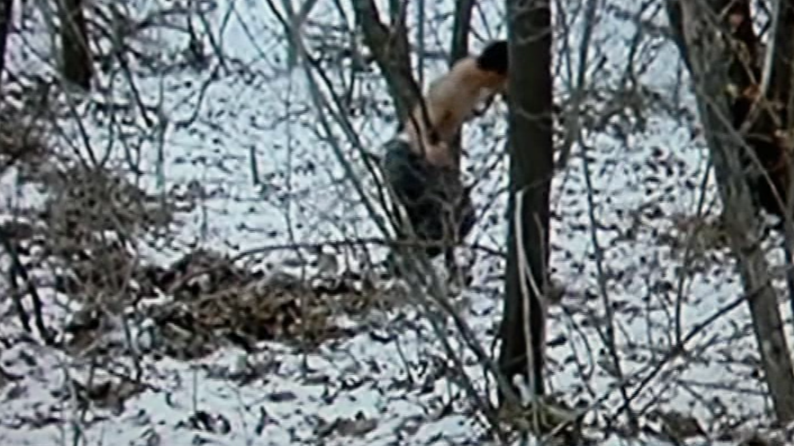
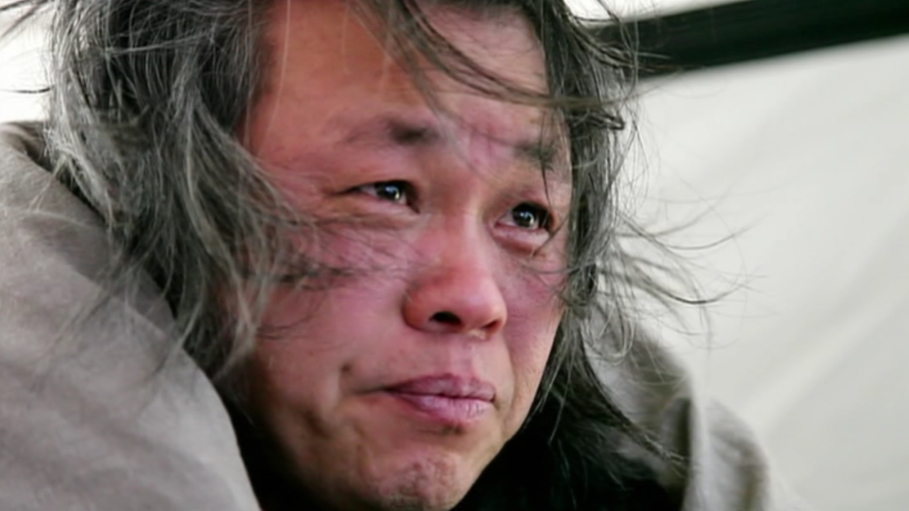
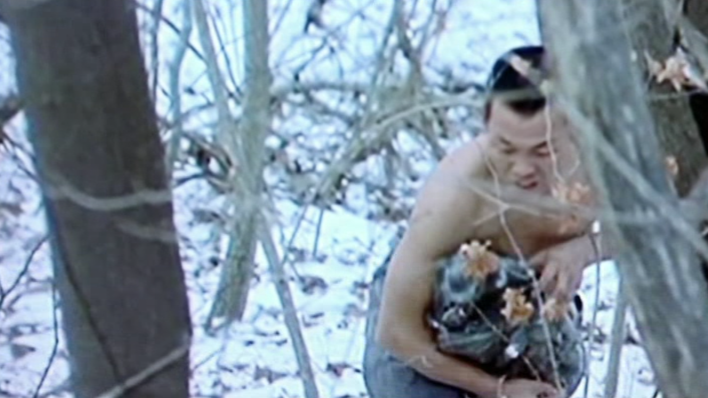
О преодолении и предназначении.
«Восемь с половиной» (1963) Федерико Феллини
Ну, говори хоть что-нибудь, если ты хочешь, чтобы я помог тебе.
Принимай меня таким, какой я есть, если можешь, — это единственный способ обрести друг друга!
Узнать больше
ASA NISA MASA — Волшебное слово!
Сарагина, румбу!
О муках творчества и пути к себе.
Узнать больше
Возникло какое-то сочувствие к этому в общем-то симпатичному и талантливому человеку и к «мишуре» вокруг него, а также
к компонентам «мишуры» — тоже в целом симпатичным и талантливым людям.
Несчастливость осознаваемая и нет — остаётся принимать жизнь и радоваться ей, пока есть время.
«Танцующая в темноте» (2000) Ларс фон Триер
Джин так хочет тебя видеть! Позволь ему, пожалуйста. — Нет.
Джин! Джин! Джин! — Ему сделали операцию. Он увидит своих внуков. Ты была права, Сельма: «Слушай своё сердце!»
О материнстве и стратегии.
Узнать больше
Очень деликатно сделанный фильм! О серьёзных, подчас жестоких, вещах в нашем мире. Очищающе и успокаивающе!
После таких фильмов понимаешь, что в жизни для тебя по-настоящему важно и ценно, набираешься силы и мужества жить! И скромности.
«Тори и Локита» (2022) Жан-Пьер и Люк Дарденн
Будем вместе — мы так выживали с тех пор, как познакомились на корабле!
Тебе, моя старшая сестра.
Очень трогательное и доброе, но трагичное кино о цинизме, равнодушии и жестокости в нашем мире.
«Ариэль» (1988) Аки Каурисмяки
Папа, копы идут!
Просто похороните меня.
О человечности и душевности у тех, у кого их «не должно быть», и их отсутствии у тех,
у кого они должны быть «по определению».
«Тени в раю» (1986) Аки Каурисмяки
Кто может поставить на кон всё и начать всё сначала под жарким солнцем?! Жизнь — это шоссе, и на пути
нам приходится нелегко.
Торопись, мой друг, человеческая жизнь так коротка. Торопись, любовь моя.
О превратностях любви и силе музыки.
«Осенняя соната» (1978) Ингмар Бергман
Быть взрослым — значит уметь управляться со своими мечтами, надеждами; перестать беспричинно тосковать и,
возможно, перестать удивляться.
Ведь существует милосердие; то есть возможность дарить друг другу заботу, помогать, проявлять нежность.
О недопонимании и великодушии.
«Персона» (1966) Ингмар Бергман
Быть может, ты станешь лучше, позволив себе быть самой собой?!
Молчание, уединение; чувство, что твоя измученная душа начинает, наконец, распрямляться.
Об отношениях и границах.
«Три цвета: красный» (1994) Кшиштоф Кесьлёвский
Так ради кого Вы это сделали?
Я хочу спокойной жизни!
О комплексности мышления и общечеловеческой любви.
«Обещание» (1996) Жан-Пьер и Люк Дарденн
Обещаю.
Боль — не главное. Чистота кадра.
О взрослении, выборе.
«Я, Дэниел Блэйк» (2016) Кэн Лоуч
Нам всем, иногда, нужен попутный ветер.
Потерять самоуважение — значит умереть.
О доброте и стойкости.
Наверх
↑